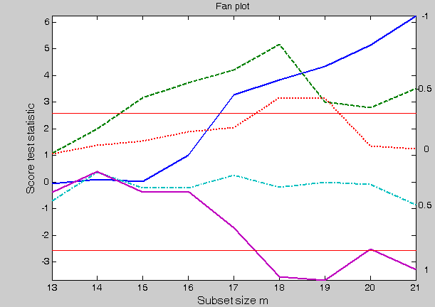
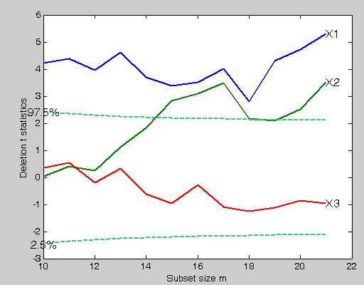
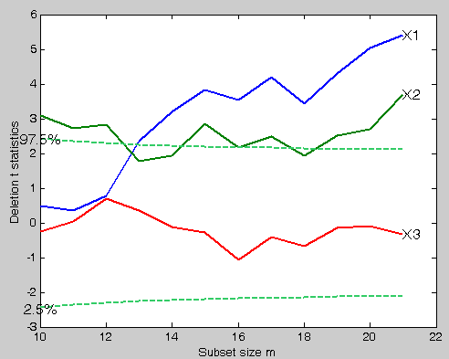
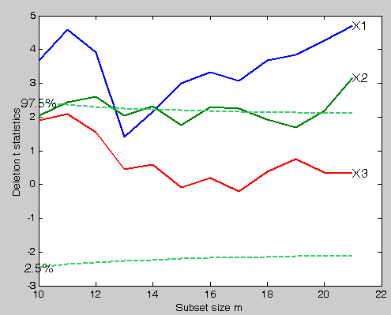

| Flexible Statistics Data Analysis Toolbox™ |
|
Robust Forward Variable Selection using Deletion (Added) t tests
[out] = FSRaddt(y,X)
[out] = FSRaddt(y,X,param1,val1,param2,val2,...)
[out] = FSRaddt(y,X) produces the forward deletion t-statistics for each explanatory variable. Since the search orders the observations by the magnitude of their residuals from the fitted subsets, the value of s2 increases during the search, although not necessarily monotonically. As a consequence, even in the absence of outliers and model inadequacies, the values of the t-statistics for the parameters in the model decrease during the search and are hard to interpret. Atkinson and Riani (2002) in order to overcome this problem use the method of added variables to provide plots of t-tests which are orthogonal to the search.
y is a vector of length n containing the response values, while X is the n-by-p-1 matrix which contains (in the columns) the values of p-1 predictive terms
[out] = FSRaddt(y,X) returns the following information
Tdel − (n-init+1)-by-(p+1) matrix containing the monitoring of
deletion t stat in each step of the forward search
1st col = fwd search index (from init to n)
2nd col = deletion t stat for first explanatory variable
3rd col = deletion t stat for second explanatory variable
...
(p+1)th col = deletion t stat for pth explanatory variable
S2del − (n-init+1)-by-(p+1) matrix containing the monitoring of
deletion t stat in each step of the forward search
1st col = fwd search index (from init to n)
2nd col = deletion t stat for first explanatory variable
3rd col = deletion t stat for second explanatory variable
...
(p+1)th col = deletion t stat for pth explanatory variable
|
Note FSRaddt automatically includes a
constant term in all models. Do not enter a column of 1s directly
into X. |
[out] = FSRaddt(y,X,param1,val1,param2,val2,...) specifies one or more of the name/value pairs described in the following table.
| Parameter | Value |
|---|---|
| 'intercept' |
If 1, a model with constant term will be fitted (default) else no constant term will be included. |
| 'h' |
The number of observations that determine the least trimmed squares estimator. h generally is an integer greater or equal than [(n+size(X,2)+1)/2] but smaller then n. |
| 'nsamp' |
Number of subsamples which will be extracted to find the robust estimator. If nsamp=0 all subsets will be extracted. They will be (n choose p). Remark: if the number of all possible subset is smaller than 1000 the default is to extract all subsets otherwise just 1000. |
| 'lms' |
Scalar. If lms=1 (default) Least Median of Squares is computed, else Least trimmed squares is computed. |
| 'init' |
Scalar which specifies the initial subset size to start monitoring exceedances,
if init is not specified it will be set equal to
|
| 'rew' |
Scalar. If rew=1 the reweighted version of LTS (LMS) and the output quantities refer to the reweighted version else no reweighting is performed (default). |
| 'plots' |
Scalar. If plots=1 a plot with robust residuals is produced else (default) no plot is produced. |
| 'nameX' |
Cell array of strings of length p containing the labels of the variables of the regression dataset. If it is empty (default) the sequence X1, ..., Xp will be created automatically |
| 'lwdenv' |
Scalar which controls the line with of the horizontal lines associated with the envelopes. Default is lwdenv=1. |
| 'quant' |
Confidence quantiles for the envelopes of deletion t stat. Default is [0.005 0.995] (i.e. a 99% pointwise confidence interval) |
| 'xlimx' | Vector with two elements controlling minimum and maximum on the x axis. Default value is '' (automatic scale) |
| 'ylimy' |
Vector with two elements controlling minimum and maximum on the y axis. Default value is '' (automatic scale) |
| 'lwdt' |
Line width for deletion t stat (default is 2) |
| 'titl' | a label for the title (default: '') |
| 'labx' | a label for the x-axis (default: 'Subset size m'). |
| 'laby' | a label for the y-axis (default: 'Deletion test statistics'). |
| 'FontSize' | Scalar which controls the font size of the labels of the axes. Default value is 12. |
| 'SizeAxesNum' | Scalar which controls the size of the numbers of the axes. Default value is 10. |
| 'nocheck' |
Scalar. If nocheck is equal to 1 no check is performed on matrix y and matrix X. Notice that y and X are left unchanged. In other words the additional column of ones for the intercept is not added. As default nocheck=0. |
load('stack_loss');
y=stack_loss.data(:,4);
X=stack_loss.data(:,1:3);
We start with a fan plot based on first-order model and the five most common values of
λ (Figure below).
[out]=FSRfan(y,X,'plots',1);The fan plot shows that the square root transformation, λ= 0.5, is supported by all the data, with the absolute value of the statistic always less than 1.5. The evidence for all other transformations depends on which observations have been deleted: the log transformation is rejected when some of the suspected outliers are introduced into the data although it is acceptable for all the data: λ= 1 is rejected as soon as any of the suspected outliers are present.

Given that the transformation for the response which is chosen depends on the number of units declared as outliers we perform a variable selection using the original scale, the square root and the log transformation.
Robust variable selection using original untransformed values of the response
% Monitoring of deletion t stat in the original scale [out]=FSRaddt(y,X,'plots',1,'quant',[0.025 0.975]);
>Robust variable selection using square root values
% Monitoring of deletion t stat using transformed response based on the square root [out]=FSRaddt(y.^0.5,X,'plots',1,'quant',[0.025 0.975]);
Robust variable selection using log transformed values of the response
% Monitoring of deletion t stat using log transformed values [out]=FSRaddt(log(y),X,'plots',1,'quant',[0.025 0.975]);

Conclusion: the forward analysis based on the deletion t statistics clearly reveals that variable X3, independently from the transformation which is chosen and the number of outliers which are declared, is NOT significant.
|
|
fsr.html | fsrb.html |
|